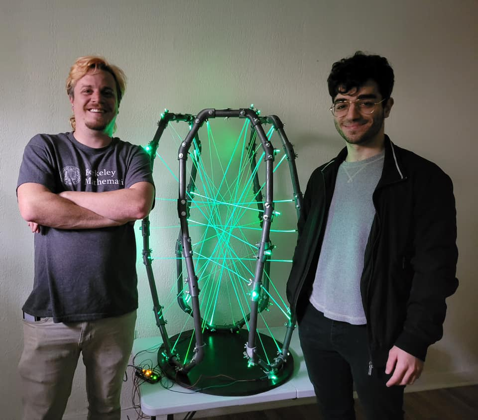
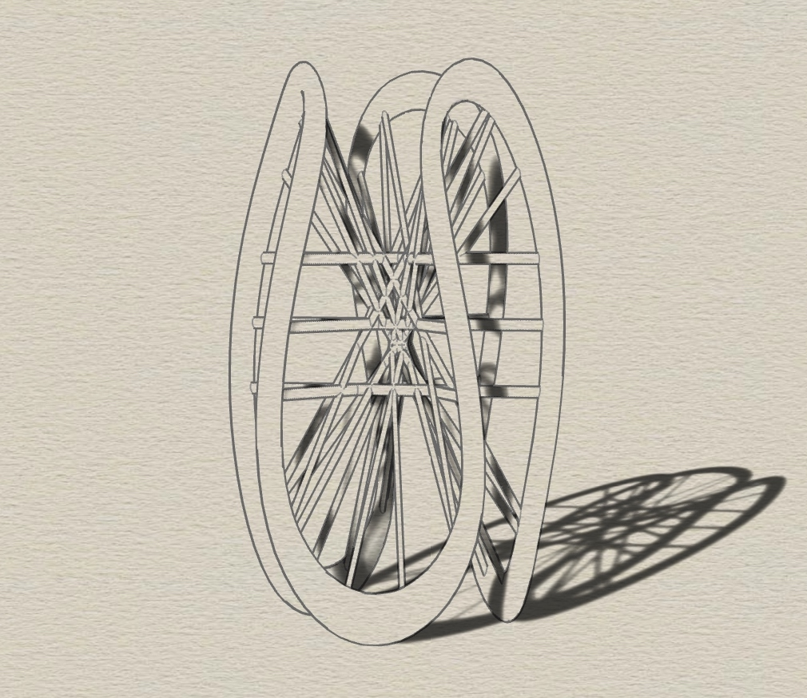
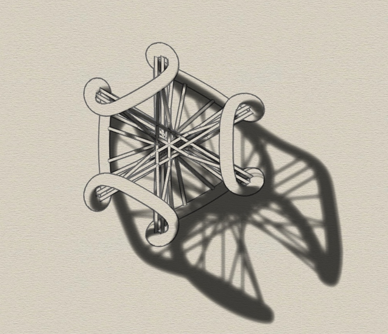

Twenty Seven
Twenty Seven is a mathematical art project in progress, an interactive sculpture depicting a cubic surface, a mathematical object arising in algebraic geometry. It illustrates the famous and mysterious theorem that every cubic surface contains exactly 27 straight lines by using those lines as the skeleton of the structure itself
The multi-disciplinary piece incorporates 3d printed parts, together with electronics and LEDs controlled by an Arduino micro-controller. The 27 lines are made of side-glow fiberoptic cable, and each one is lit by an individually addressible neopixel LEDs.
The piece is a collaboration with Daniel Rostamloo. The piece is inspired in part by the work of Oliver Labs, who has made many beautiful models of cubic surfaces emphasizing (or only consisting of) the 27 lines. We were also very much helped along the way by this post by Nathan Fieldsteel, as well as this carefully worked out example by Paul Masson. We are also indepted to this beautiful and explicit paper by Tetsuji Shioda which allowed us to generate families of cubic surfaces together with their lines during our design phase.
 